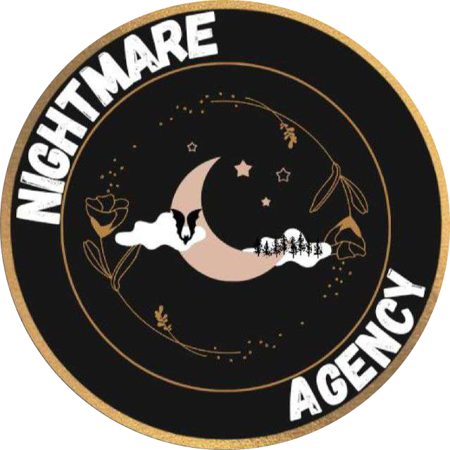

Aking mga tagumpay
Aking mga personal at propesyonal na proyekto:
Mga personal na tagumpay


Streaming sa Kumu Live
2025 - Présent
Streamer ako sa Kumu simula Enero 2025 at miyembro ng  Nightmare Agency. Dahil sa aking agency, naging mas bukas ako at lumago sa isang kapaligirang naghihikayat ng pagkamalikhain at makabuluhang pakikisalamuha sa isang aktibong komunidad.
Propesyonal at akademikong tagumpay

Pag-aaral ng Mga Gamit ng AI sa IUT
Nobyembre 30, 2023 - Enero 17, 2024
Bilang bahagi ng isang survey na isinagawa sa mga miyembro ng IUT Paris - Rives de Seine, sinuri namin ang mga pagkakaiba sa paggamit at pananaw ng artificial intelligence depende sa katayuan at mga departamento.
Ginawang posible ng proyektong ito na mag-cross-reference ng quantitative data at gumawa ng mga konklusyon sa pagsasama ng AI sa mas mataas na edukasyon.

Epidemiological Analysis of Influenza Syndromes
November 26, 2024 - January 10, 2025
Bilang bahagi ng isang akademikong takdang-aralin, nakipagtulungan ako sa isang malalim na pagsusuri ng epidemiological data gamit ang mga istatistikal na modelo at serye ng oras upang pag-aralan ang mga rate ng saklaw ng mga sakit na tulad ng trangkaso. Pinahintulutan ako ng proyektong ito na maglapat ng mga advanced na kasanayan sa Python, pagsusuri ng data at visualization.
Download the report Download the mission sheet
Pagsusuri ng mga pagbubukas sa mataas na antas ng chess
Disyembre 17, 2024 - Enero 15, 2025
Proyekto ng pagsusuri ng mga pagbubukas sa mataas na antas ng chess. Ang layunin ay tukuyin ang mga estratehikong uso ng mga pagbubukas at ang kanilang epekto sa pagganap ng mga manlalaro.
I-download ang resulta ng proyekto